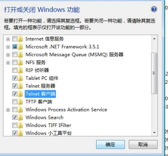
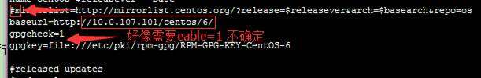

* 关联的文件................................................................................................................... 3
Grep 过滤基本命令介绍..................................................................................... 5
1.Top 监控服务器资源-显示，管理执行中的程序。............................................. 6
4 pstree 以树状图显示进程，只显示进程的名字，且相同进程合并显示。........... 8
1 网卡配置（出问题怎么解决）....................................................................... 13
2. 进入 配置编辑器自己手动写........................................................................ 13
Umask 查看创建文件的默认权限...................................................................... 15
* user用户、用户组的一些命令运用................................................................. 31
3.1循环创建10个文件..................................................................................... 36
Vi vim 也是一样的编辑................................................................................... 41
*打开主机里面的telnet 服务............................................................................ 47
7 Rpm安装 sql 不需制定包名：rpm安装没有了yum的那么高的依赖性，.... 51
* 做一个本地的yum源.................................................................................... 56
我的在网上找的配置环境变量第三种方法................................................................ 64
* 关联的文件
1. linux的基本常用命令以及案例
2017. 9.6 Linux 学习
1系统级别
|
|
*main cmd
*cmd --help
* info cmd
Ctrl+c/z 退出
Ctrl +r
方向键
Tab 键 双击，单机
Cmd [option] [/path]
|
* ll |
|
Pwd 查看当前文件位置 |
|
Hostname 主机名 *hostname hadoop01 -这个是临时性的，重启之后就还恢复以前的名字了 * vi /etc/sysconfig/network --这个是真的修改
* 编辑完之后按 esc + :wq + 回车 |
*时间显示 :date
|
date -s ‘ 00:00:00’ --这个是修改时间 date -s ‘2017 -09-05 00:00:00’ --改时间 |
*看进程 ps命令
|
|
|
Ps -ef -a 显示所有终端机下执行的程序，除了阶段作业领导者之外。 -A/-e 显示所有程序。 e 列出程序时，显示每个程序所使用的环境变量。 f 用ASCII字符显示树状结构，表达程序间的相互关系。 g 显示现行终端机下的所有程序，包括群组领导者的程序。 h 不显示标题列。 r 只列出现行终端机正在执行中的程序。 s 采用程序信号的格式显示程序状况。 管道把前面的命令到其他 1. ps -ef | grep mysql --管道 2. ps-ef |grep nautilus |
Grep 过滤基本命令介绍
|
-下面会出现很多帮助 -recursive 递归 Grep -i -r sshd /var/log/ -a或--text 不要忽略二进制的数据 -d<进行动作>或--directories=<进行动作> 当指定要查找的是目录而非文件时，必须使用这项参数，否则grep指令将回报信息并停止动作 -c或--count 计算符合范本样式的列数。 -d<进行动作>或--directories=<进行动作> 当指定要查找的是目录而非文件时，必须使用这项参数，否则grep指令将回报信息并停止动作 -h或--no-filename 在显示符合范本样式的那一列之前，不标示该列所属的文件名称。 -i或--ignore-case 忽略字符大小写的差别。 -i或--ignore-case 忽略字符大小写的差别。 |
1.Top 监控服务器资源-显示，管理执行中的程序。
|
1-2 N cpu 使用率 Mem 内存 Q 退出程序 |
|
关于top的参数 |
|
b 使用批处理模式。 |
* 附加 mv ln
|
mv，移动文件和改文件名 ln ‐s 源目标 more，显示文件内容带分页，ctrl + page up上翻，长空格下翻 grep，在文本中查询内容 |，管道命令，在linux和unix系统，把上一个命令的结果交给|后面的命令处理 - man [command]，帮助，类似于dos中的help |
Find
|
- find，搜索文件及目录。在linux中，因为文件系统是以级别式的结构来组成的，所以要在整个系统中找到特定的文件和目录并不是件容易的事。而“find”命令可以解决上述问题 - 在特定的目录下搜索并显示指定名称的文件和目录 |
3.init
|
Cat /etc/inittab 0-6 的内容 0 ：关机 1： 单用户模式，服务器维护的时候用，不允许用户写文件，只许读 2：多用户模式，比三多了没有网的时候跟3一样 3：也是多用户模式没有桌面 4：没有设置 6： 重启 关机： Shutdown -h now init 0 |
4 pstree 以树状图显示进程，只显示进程的名字，且相同进程合并显示。
|
Pstree 或者 pstree
-p （显示pid） 常用参数
格式：pstree 以树状图显示进程，只显示进程的名字，且相同进程合并显示。 格式：pstree -p 以树状图显示进程，还显示进程PID。 格式：pstree <pid> 格式：pstree -p <pid> 以树状图显示进程PID为<pid>的进程以及子孙进程，如果有-p参数则同时显示每个进程的PID。 格式：pstree -a 以树状图显示进程，相同名称的进程不合并显示，并且会显示命令行参数，如果有-p参数则同时显示每个进程的PID。 因为pstree输出的信息可能比较多，所以最好与more/less配合使用。 |
5.进程
|
3.14 显示守护进程目录树 Pstree 或者 pstree
-p （显示pid） 3.15 显示所有正在运行的进程 ps
-aux jps Which java Java -version Kill -9 pid --杀死进程 Ps -ef | grep sshd --杀死这个进程
|
6.更改密码
|
E -选中第二行 e --空格+1 - 回车- b +回车（重启）-passwd -就可以修改密码了
|
|
|
7.ip配置
|
Addres ip地址 第二个是子网掩码 第三个是网关 |
|
|
1 网卡配置（出问题怎么解决）
2. 进入 配置编辑器自己手动写
64516
|
Cd /var --进入可变 Cat boot.log Ping --192.168.1.1 --自己的网关 Vi ifcfg-eth0 --编辑网卡适配 Service network restart --重启网卡 Cd /etc/sysconfig/network-scripts/ Vi ifcfg-eth0 --进行编辑 或者也可以直接 vi /etc/sysconfig/network-scripts/ifcfg -eth0 进行设定i 下面是手动配置网络的方法 |
|
DEVICE=eth0 NAME="System eth0" HWADDR=00:0C:29:61:44:76 TYPE=Ethernet UUID=06754180-33f9-441d-a252-13647c4b5b39 ONBOOT=yes NM_CONTROLLED=yes BOOTPROTO=none IPADDR=192.168.1.200 NETMASK=255.255.255.0 DNS1=192.168.1.1 GATEWAY=192.168.1.1 IPV6INIT=no USERCTL=no |
|
注意：这里的dens1 可以是本地的网关，也就是 192.168.111.2 也可以是8.8.8.8 也可以是中国联通的114.114.114.114 |
|
|
3.打开第一个centos的服务器页面
配置服务器
service httpd start
2.关掉防火墙
Service iptables stop /start
/注意在服务器上开个洞
Cd /etc/sysconfig
Vi iptables
Service iptables start 打开防火墙
然后可以访问本机 ip地址了，就是第一个网页了，
在本地放一个页面的话 是在 cd /var/www/html /下面创一个 index.html
Vi index.html
Tar zzxf
Top 监控服务器资源
|
这里有问题 |
Umask 查看创建文件的默认权限
Umask -> 0 0 2 2 (7 5 5 )
修改的话可以直接修改
umask值002 所对应的文件和目录创建缺省权限分别为6 6 4(666 减 2)和7 7 5(777 减 2)。
查看目录磁盘
|
Which mkfs.ext4 Du Du -h /var/log/ Du -h -s /var/log/ -du 查看目录占用磁盘大小 Fsck /dev/sda1 --修复 |
查看目录磁盘
Useradd 用户名
Ll /home/
Cat passwd --显示用户
Cat /etc/shadow
Groupadd shenyabo
Useradd tom --默认创建一个跟用户组，就是tom
Userdel (-r )tom
Rm
-rf /home/tom
cat /etc/passwd|awk -F: '{print
$1}'|grep wang
Useradd -G toms
tom
添加tom用户，并且制定附加群组为toms ，而且本身自己所属组就是tom组，
如果指定了tom的所属组（也就是制定了-g ,那么系统不会创建一个tom组，而是创建一个你指定的组）
组
Groups lucey
echo “helloword” --输出
Id lucey
切换
Su lucey
Su
Su root
Root的密码
查看当前是否登录,谁登录
Whoami
Which groupdel
Groupdel tom 删除组tom
Gropuadd bimen
Gropupdel bimen
非空组不能直接移除
Which gpasswd
Gpasswd -a [用户] [组] //将用户添加到组中(gpasswd -a lucey )
Id lucey (显示lucey在哪)
Gpasswd -a lucey tom （lucey 移到tom组中）
Removing user lucey from group tom -- 吧tom组中的lucey移除
磁盘
文件方面的
文件的全新啊
网络服务
*第一天老师笔记
|
hadoop 4+2模式 hadoop 课程介绍 1、安装虚拟机： 安装vmware软件 创建虚拟机 在虚拟机中安装linux系统 linux is not unix 2、Linux是一套免费使用和自由传播的类Unix操作系统。用于：手机、平板、路由器、电脑 3、Linux的基本思想有两点：第一，一切都是文件；第二，每个软件都有确定的用途。 4、linux主要特性： a、完全免费 b、支持多种平台 c、多用户、多任务 d、良好的界面 e、完全兼容POSIX1.0标准 5、linux常用版本： Red Hat：RHEL(Redhat Enterprise Linux，也就是所谓的Redhat Advance Server收费版本. 红帽企业级Linux Fedora Core：由原来的Redhat桌面版本发展而来，免费版本 Centos：RHEL的社区克隆版本，免费 Debian运行起来极其稳定，这使得它非常适合用于服务器 Ubuntu：是Debian的一款衍生版，也是当今最受欢迎的免费操作系统, 最流行的linux桌面系 Fedora: 想尝试最先进的技术，等不及程序的稳定版出来。其实，Fedora就是红帽公司的一个测试平台；产品在成为企业级发行版之前，在该平台上进行开发和测试。 6、linux系统目录： 目录 作用 / Linux系统的根目录，（顶级目录） /bin和/usr/bin 命令（二进制）文件目录，包含可供root用户和普通用户所使用的Linux命令和二进制文件，包含shell解析器等 /boot 系统引导和内核目录，存放引导装载文件 /dev 设备目录，存放各个硬件设备的信息，例如光驱、硬盘等 /etc 系统级别的配置文件存放的目录，一般由配置管理员来使用 /home 所有普通用户的家目录 /lib、/usr/lib、 /usr/local/lib 系统使用的函数库的目录 /lost+fount 在ext2和ext3文件系统中，系统崩溃时记录信息的目录 /opt 给主机额外安装软件所摆放的目录 /proc 重要的需要放置在内存中的数据 /root root 用户的的根目录 /sbin、/usr/sbin /usr/local/sbin 放置的是系统管理员（root）才能使用的命令，普通用户只能进行查看，而/bin目录中的命令普通用户也可以使用 /tmp 存放应用程序产生的临时数据不能在此目录下存放重要数据 /var 系统一般运行时需要改变的数据 /sys 系统相关文件存放目录 /usr 应用程序相关目录命令、函数库、共享包、内核源码 6、命令： uname -a uname -r uname -m 命令帮助：man 命令 或者 命令 --help man uname 和 uname --help fat32转ntfs格式：在打开的cmd dos命令窗口中光标处输入convert g: /fs:ntfs按回车 在bios中将虚拟化设置为enable --------------------------------------------day02------------------------------------------------- 1、查看主机名： hostname 2、查看网卡： ifconfig eth0 3、查看时间： date date -s "2015-5-8 19:48:00" 查看进程 ps -fe | grep redis 查看系统资源： top -s 3.9管道：| cmd1 | cmd2 将cmd1输出结果交给cmd2命令来执行 3.10 grep过滤 3.11 重新启动Linux操作系统 reboot Init 6 3.12 关闭Linux操作系统 shutdown -h now init 0 3.13 图形和命令行转换 vi /etc/inittab init 3 命令行模式 init 5 图形化 3.15 显示所有正在运行的进程 ps -aux 3.16 显示所有正在运行java 进程/ jps 3.17结束正在运行的指定进程(参照33) kill -9 pid 3.18 linux 不进去系统更改root密码 1.在grub选项菜单按e进入编辑模式 2.编辑kernel那行 输入” 1”（空格1） 3.按B重启存的 4.进入后执行下列命令 root@#passwd root (配置root的密码) Enter new unix password:输入新的密码 root@#init 6 3.20 显示系统的磁盘空间用量 df -h //显示磁盘分区信息 fdisk -l //查看磁盘分区 du -ach /home //查看home目录使用情况 3.21 挂载 mount -t vfat /dev/sdb1 /media/umnt //挂载 umount /media/umnt //卸载 3.22 账户 /etc/passwd //保存账户的信息 /etc/shadow //保存账户密码信息 /root //root用户家目录 /home/xxx //普通用户xxx的家目录 3.23 添加和删除用户 useradd # useradd //创建用户 # useradd openlab # gpasswd -a openlab gropenlab //将用户加入到组中 【用户/用户组】 # gpasswd -d openlab gropenlab //将用户从组中删除 # echo "123456" | passwd --stdin feige //不通过交互信息，直接改用户密码 # userdel //删除用户 不删除用户文件 # userdel -r //连主目录一起删除 3.24 :创建用户组 groupadd manager 3.25 创建用户 useradd -G manager tom 3.26 更改密码方式1 passwd tom 3.28 删除指定的账号 userdel tom 3.29锁定帐户 tom2 禁止其登录 usermod -L tom 3.30切换当前用户帐户为 admin su - admin 3.31. 显示当前登录用户帐户 whoami 3.32 查看系统文件判断添加用户组添加用户操作是否正确 cat /etc/passwd cat /etc/group 3.33查看当前位置 pwd 3.34显示当前目录的文件列表 ls -l /data0 3.35递归显示/目录的文件列表 ls -R /data0 3.36显示文件或文件夹详细信息 权限：读取\写入\可执行 归属关系: 所有者\所属组\其他用户 -|rw-|---|---. 1 root root 1771 4月 28 2015 anaconda-ks.cfg ① ② ③ ④ ⑤ ⑥ ⑦ ⑧ ⑨ ①：文件类型 - 文件 d 目录 l 链接 ②：所有者权限（u） r 读 4 w 写 2 x 执行 1 ③：所属组权限（g） r 读 4 w 写 2 x 执行 1 ④：其他用户权限（o） r 读 4 w 写 2 x 执行 1 ⑤：所有者 ⑥：所属组 ⑦：文件大小 ⑧：最后修改时间 ⑨：文件名 3.37 创建文件夹和文件 (指定目录和不指定目录的区别) mkdir /tmp/test01 //创建空文件夹 mkdir -p /data1/hadoop/hdfs/name //创建多级文件夹 touch /tmp/test01/file.txt //创建空文件 vi file.log //创建空文件并进如编辑模式 echo > file.txt //创建file.txt并输入空到该文件中 3.38 复制文件 cp /tmp/file1.txt /opt 3.39 复制目录 cp -r /tmp/test01 /opt 3.40移动，剪切，重命名 mv /opt/test01 /tmp mv /opt/file1.txt /tmp/file2.txt 3.41 删除 rm //删除文件 rm -r //删除目录 rm -f //强制删除 rm –rf folder //常用命令 不可恢复 3.42文件内容查看 cat -n //查看内容时显示行号 cat /etc/redhat-release //不显示行号 cat -n /etc/passwd //查看内容时显示行号 3.43设置文件所有者拥有对文件读写执行权限 chmod 777 /data0/my.cnf 3.44 目录文件显示多行可上下翻查 less /etc/passwd 3.45 显示文件的头10行或尾10行 tail //默认查看文件尾10行 head //默认查看文件头10行 -n 数字 //查看指定头几行 # tail /etc/passwd # head /etc/passwd # tail -n 2 /etc/passwd # head -n 3 /etc/passwd # head -n 12 /etc/passwd | tail -n 5 3.46 重定向 > >> > 先清空文件内容，后写入新的内容 # ls -l /root > /tmp/file1.txt >> 追加新的内容，旧的内容不会消除 # ls -l /root >> /tmp/file1.txt 3.47 屏幕打印 echo echo "No Hello World..." //打印到屏幕 echo “hello word” > /data0/my.cnf //打印到文件 echo “hello word” >> /data0/my.cnf //打印追加到文件 3.48 文本编辑器 VIM vim file :q //退出 :w //保存 :wq //保存退出 :q! //强制退出 3.49 打包 tar原理 -c 打包 -x 解包 -f 必须要 -C 指定解包位置 -v 输出信息 3.49 打包tar案例（tar命令平常就代替了gz命令） 3.50 使用tar备份指定目录/data0/内容包括子目录中内容备份至 /data3/data0.tar.gz tar -zcvf /data3/data0.tartar.gz /data0 3.51恢复tar 文件中的内容/data3/data0.tar.gz 至 /data2 tar -zxvf /data3/data0.tar.gz -C /data2 3.52 给shell命令起别名 vi /etc/bashrc 在文件最后一行添加 alias cls=’clear’ 保存退出后输入 #source /etc/bashrc 生效 3.52修改指定文件文件的所属组所有者为hadoop用户/data3/data0.tar.gz chown -r hadoop:hadoop /data3/data0.tar.gz 3.53 which cmd 查找cmd命令所在路径 # which reboot 3.54 locate 文件查找-效率很快（用的是数据库） # locate httpd.conf //查找文件按所在 # updatedb //更新数据库，使之生效 3.55 find 文件查找-效率很慢 #find / -name httpd.conf find 路径 条件 # find / -name httpd.conf find 路径 条件 -exec cmd {} \; # find / -name httpd.conf -exec ls -l {} \; 安装xshell软 -------------------------------------------------------day03---------------------------------------------- |
Day02 linux第二天
复习
磁盘 fdisk -l
Du -s -h
Mount
Umount
Fsck
用户和组：
Useradd tom
Passwd tom
Cat /etc/passwd
Groupadd g1
Cat /etc/group --查看组
Gpasswd -a /-d user group
Id user
Groups user
Su
Cat /etc/shadow --看密码
文件方面的
创建目录
Mkdir test
Mkdir -p test/02/03/04
Cd ./aa ./cc ./dd
列出
Ll -a -h ll- ah
Ls -a- h
创建文件
Touch ./test/1
Vi test/1.sh
编辑在退出
Vim test/2.sh
echo "hello world " >> /home/test/4.sh
For i int ‘seq 5 20 ’; do touch /home/test/${i}.sh ; done
*补充：seq的使用
|
例一： seq
-f 'dirg' 1 10 | xargs mkdir -s 選項主要改变输出的分格符, 默认是\n , 就是newline |
for i in $(seq 1 10) ;do touch ./test${i}.sh ;done
写内容
Which nano
Nano /home/test/4.sh -- 也可以进行编辑 ctrl +m
Vi
Vim
Nano
>>/> 重定向追加
查看
Nano Cat list more
Cat -n /file --代表显示行号
More :按照百分比 (b键：回看)
Less(回看用方向键也可以，可以查找/)
Head :默认看前十行
Tail :从后往前看 history 输入过的命令
*1tail -f 文件名 监听 ，第一个虚拟终端创建一个文件夹
*2 第二个终端进行文本编辑，然后就在第一个终端报出来
Tail -100 /var/log/dracut.log-20170905
用于日志监控的话 -f
Tail -100 -f /var/log/dracut.log-20170905
Echo “hellow world ” >> /文件名
Vi
Which gedit main gedit
列出
复制
Cp ./test/4.sh ./aa/
Cp -r ./test/ ./aa --复制目录 》》Ll ./aa/ 文件也可以-r
Cp -r ./test/ ./aa/123 -复制的时候重命名
吧 678三个文件复制过去
移动
Mv .//aa/4.sh ./6.sh ./cc/ --移动文件
Mv ./aa/123/
.//cc/ --这里不需要-r
Mv /home/aa/456/ /home/cc/789
--移动重新命名
是不行的
重命名
Cp
MV
Rename :
Rename
这个foo10 是不行的 * 一个字符 --当前目录(home/test/)
Cd ./test/
Rename .sh .jsp *.sh --批量命名就ok了
*
Rename .jsp .sh
./test/*.jsp
删除
|
* rm -rf --递归全部删除 ./aa/ Rm -r ./cc/123/ --这个比较麻烦 、安全 Rm -rf ./cc/123/ 直接删除 |
Other:
bc --计算器
2.文件权限：
1. d rwx r-x r-x.
R 4
W 2
X 1
用户和组都会影响相关权限
Ll ls cat 读
Vi vim mkdir rm (写的权限)
Cp mv rename 读写
Mv /aa /bb 前读后写
X 各种脚本 执行()
1、修改权限(只有创建者和root)
d rwxr -xr -x
Chmod 775 ./02
递归修改
Chmod -R 775 ./02
Chmod -R 76 ./02 --从右往左 --- 7 6
a u g o
Chmod -R a-x ./02 -a代表所有
* user用户、用户组的一些命令运用
一下是一个网址usermod group的使用方法
http://www.codeweblog.com/usermod-%E5%92%8C-groupmod-%E5%91%BD%E4%BB%A4%E8%AF%A6%E8%A7%A3/
&查看所有用户
注意：
|
usermod不允许你改变正在线上的使用者帐号名称。当usermod用来改变userID,必须确认这名user没在电脑上执行任何程序 如果想把一个用户添加到三个以上的组里面必须使用-a参数, -G参数只能实现以用户属于两个组!! |
Cat /etc/shadow ：查看当前所有用户，不包含密码
Cat /etc/passwd :查看当前所有的用户以及密码
Group
Groups 【用户名】 显示当前用户所属的组，以及附加群组
Groupadd [群组名]
useradd
Useradd -g [群组名] [用户名] 制定用户名所属的属主群组，制定了这个就不创建用户名同名的用户组了
Useradd -G 【附加群组名】 [用户名]
创建一个用户，并且给一个密码
|
Useradd -G toms
tom -g<群组> 指定用户所属的群组。 添加tom用户，并且制定附加群组为toms ，而且本身自己所属组就是tom组， 如果指定了tom的所属组（也就是制定了-g ,那么系统不会创建一个tom组，而是创建一个你指定的组） 组 |
Usermod命令
|
usermod命令 用于修改用户的基本信息。usermod命令不允许你改变正在线上的使用者帐号名称。当usermod命令用来改变user id，必须确认这名user没在电脑上执行任何程序。你需手动更改使用者的crontab档。也需手动更改使用者的at工作档。采用NIS server须在server上更动相关的NIS设定 -c<备注>：修改用户帐号的备注文字； -d<登入目录>：修改用户登入时的目录； -e<有效期限>：修改帐号的有效期限； -f<缓冲天数>：修改在密码过期后多少天即关闭该帐号； -g<群组>：修改用户所属的群组； -G<群组>；修改用户所属的附加群组； -l<帐号名称>：修改用户帐号名称； -L：锁定用户密码，使密码无效； -s：修改用户登入后所使用的shell； -u：修改用户ID； -U:解除密码锁定。 |
|
修改名字： usermod -l lucey2 lucey （新名，旧名） 指定帐号过期日期 (-e参数的使用) 1. sed -n '$p' /etc/shadow 2. urchin:$6$1PwPVBn5$o.MIEYONzURQPvn/YqSp69kt2CIASvXhOnjv/t \ 3. # usermod -e 2012-09-11 urchin 4. # sed -n '$p' /etc/shadow 5. urchin:$6$1PwPVBn5$o.MIEYONzURQPvn/YqSp69kt2CIASvXhOnjv/t \ ,指定用户帐号密码过期多少天后，禁用该帐号 1. # usermod -f 0 urchin |
|
Usermod -aG [索要附加的用户群组] [索要操作的用户名] --吧后面的用户添附加到其他群组
但是要注意。不能修改所属群组。也就是 -ag 只能是 -aG |
Userdel
Userdel -r [用户名] 不加-r的话，就只删除用户的账号，加上-r则删除所有的文件，
如果没有删除掉用户的所有文件夹的话，
比如 /home/tom 里面的tom用户删除了，但是文件依然存在
则执行：rm -rf /home/tom 就ok了
|
1,新建用户test，密码test,另外添加usertest组 1. #useradd test 2. #echo "test" | passwd --stdin test 3. #groupadd usertest 2,把test用户加入usertest组 (-aG 参数的使用) 1. #usermod -aG usertest test ##多个组之间用空格隔开 2. #id test 3. uid=500(test) gid=500(test) groups=500(test),501(usertest) 3,修改test用户的家目录 (-md参数的使用) 1. #usermod -md /home/usertest 2. #ls /home 3. usertest 4,修改用户名 1. #usermod -l urchin(新用户名称) test(原来用户名称) 2. #id urchin 3. uid=500(urchin) gid=500(test) groups=500(test),501(usertest) 修改用户的所属组 1. groupadd -g 578 test1 2. #usermod -g 578 urchin (578组一定要存在) |
Groupsadd 创建组
Cat /etc/group
|
【步骤四】cat /etc/group|grep 组名 cat /etc/group|grep 组名，用于查找某个用户组，如下图 【步骤五】用户和组常用命令 groups 查看当前登录用户的组内成员 groups test 查看test用户所在的组,以及组内成员 whoami 查看当前登录用户名 |
修改用户的所属组
修改用户的所属组
groupadd -g 578 test1
#usermod -g 578 urchin (578组一定要存在)
groupmod –n 新组名
原组名，为一个组更改名字 修改的是/etc/group文件
语 法：groupmod [-g <群组识别码> <-o>][-n <新群组名称>][群组名称]
补充说明：需要更改群组的识别码或名称时，可用groupmod指令来完成这项工作。
参 数：
-g <群组识别码> 设置欲使用的群组识别码。 groupmod -g 505 bbb //把bbb组的识别码改为505(原来是504!)
-o 重复使用群组识别码。
-n <新群组名称> 设置欲使用的群组名称。 groupmod -n bbb aaa //把aaa组名改成bbb.
修改用户组
Chmod u+x ,g-r,o+w ./02
Permission denied 权限被拒绝
Vi 写一个sh文件 里面内容，然后执行，
权限的练习
*Chown lucey:lucey ./9.sh
* chown tom ./9.sh
Chown lucey ./9.sh
-俩都是lucey了
Chown :lucey ./9.sh --仅仅动组 的所属者
下面是循环遍历所有者 ，把组都弄成tom （主要还是冒号）
2修改用户和组
Chown -R root:root /test
3. 配置sudoVisudo -f /etc/sudoers
3.1循环创建10个文件
|
Touch test{1..5} a.txt 创建6个文件
|
Vi ./etc/sudoers 进入
想要编辑不能，那么先退出
:q! 强制退出
那么需要
Visudo -f /etc/sudoers 再次进入
按 o 键
就可以了，666大戏弄滴
Su lucey
Sudo +其它命令 就可以删了
但是需要输入密码
然后就可以了
*然后再次进入
O 键
在 ：wq 退出
再次进入 lucey
就可以删除成功！
3.linux
打包操作
Tar -zcvf ./aa
./home/aa.tar
错误！跟windos习惯相反 ，吧资源与目的路径换位，如下
注意：zxvf 是加压的意思 如下
下面是解压命令 .tar 文件是红色的

Tar 打包
*Which tar
->//bin/tar
*which zip
--> /user/bin/zip
*which unzip
--> /user/bin/unzip
* which gunzip
--> /user/bin/gunzip
Tar
-c ：建立一个压缩文件的参数指令(create 的意思)；
-x ：解开一个压缩文件的参数指令！
-t ：查看 tarfile 里面的文件！
特别注意，在参数的下达中， c/x/t 仅能存在一个！不可同时存在！
因为不可能同时压缩与解压缩。
-z ：是否同时具有 gzip 的属性？亦即是否需要用 gzip 压缩？
-j ：是否同时具有 bzip2 的属性？亦即是否需要用 bzip2 压缩？
-v ：压缩的过程中显示文件！这个常用，但不建议用在背景执行过程！
-f ：使用档名，请留意，在 f 之后要立即接档名喔！不要再加参数！
例如使用『 tar -zcvfP tfile sfile』就是错误的写法，要写成
『 tar -zcvPf tfile sfile』才对喔！
-p ：使用原文件的原来属性（属性不会依据使用者而变）
-P ：可以使用绝对路径来压缩！
-N ：比后面接的日期(yyyy/mm/dd)还要新的才会被打包进新建的文件中！
--exclude FILE：在压缩的过程中，不要将 FILE 打包！
范例：
范例一：将整个 /etc 目录下的文件全部打包成为 /tmp/etc.tar
[root@linux ~]# tar -cvf /tmp/etc.tar /etc <==仅打包，不压缩！
[root@linux ~]# tar -zcvf /tmp/etc.tar.gz /etc <==打包后，以 gzip 压缩
[root@linux ~]# tar -jcvf /tmp/etc.tar.bz2 /etc <==打包后，以 bzip2 压缩
# 特别注意，在参数 f 之后的文件档名是自己取的，我们习惯上都用 .tar 来作为辨识。
# 如果加 z 参数，则以 .tar.gz 或 .tgz 来代表 gzip 压缩过的 tar file ～
# 如果加 j 参数，则以 .tar.bz2 来作为附档名啊～
# 上述指令在执行的时候，会显示一个警告讯息：
# 『tar: Removing leading `/' from member names』那是关於绝对路径的特殊设定。
范例二：查阅上述 /tmp/etc.tar.gz 文件内有哪些文件？
[root@linux ~]# tar -ztvf /tmp/etc.tar.gz
# 由於我们使用 gzip 压缩，所以要查阅该 tar file 内的文件时，
# 就得要加上 z 这个参数了！这很重要的！
范例三：将 /tmp/etc.tar.gz 文件解压缩在 /usr/local/src 底下
[root@linux ~]# cd /usr/local/src
[root@linux src]# tar -zxvf /tmp/etc.tar.gz
# 在预设的情况下，我们可以将压缩档在任何地方解开的！以这个范例来说，
# 我先将工作目录变换到 /usr/local/src 底下，并且解开 /tmp/etc.tar.gz ，
# 则解开的目录会在
/usr/local/src/etc 呢！另外，如果您进入
/usr/local/src/etc
# 则会发现，该目录下的文件属性与 /etc/ 可能会有所不同喔！
范例四：在 /tmp 底下，我只想要将 /tmp/etc.tar.gz 内的 etc/passwd 解开而已
[root@linux ~]# cd /tmp
[root@linux tmp]# tar -zxvf /tmp/etc.tar.gz etc/passwd
# 我可以透过 tar -ztvf 来查阅 tarfile 内的文件名称，如果单只要一个文件，
# 就可以透过这个方式来下达！注意到！ etc.tar.gz 内的根目录 / 是被拿掉了！
范例五：将 /etc/ 内的所有文件备份下来，并且保存其权限！
[root@linux ~]# tar -zxvpf /tmp/etc.tar.gz /etc
# 这个 -p 的属性是很重要的，尤其是当您要保留原本文件的属性时！
范例六：在 /home 当中，比 2005/06/01 新的文件才备份
[root@linux ~]# tar -N '2005/06/01' -zcvf home.tar.gz /home
范例七：我要备份 /home, /etc ，但不要 /home/dmtsai
[root@linux ~]# tar --exclude /home/dmtsai -zcvf myfile.tar.gz /home/* /etc
范例八：将 /etc/ 打包后直接解开在 /tmp 底下，而不产生文件！
[root@linux ~]# cd /tmp
[root@linux tmp]# tar -cvf - /etc | tar -xvf -
# 这个动作有点像是 cp -r /etc /tmp
啦～依旧是有其有用途的！
# 要注意的地方在於输出档变成 - 而输入档也变成 - ，又有一个 | 存在～
# 这分别代表 standard
output, standard input 与管线命令啦！
# 这部分我们会在 Bash shell 时，再次提到这个指令跟大家再解释啰！
Vi vim 也是一样的编辑
按 i 或者 o 换行并且进入编辑模式
：w 保存
:wq 保存退出
5查找
* Which 只能查找可执行命令
Which gzip
* whereis gzip 查找的是安装文件所涉及的一些位置，比如想要写在一些王文件
* locate gzip 查找的是定位在内置的数据库当中查找的
创建一个 Touch gzip
Locate gzip 定位不了
则：Updatedb 刷新一下，就能用locate查询出来了
* find / -name gzip 这样也能查找（完全匹配，但是比较慢，所以服务器高峰最好不要用这个命令）
Find /home -name gzip
-也可以按照时间找，666
Find /size -name gzip
Mian find
Info find
Find -help 查找用法
/**** -- 查找的意思，在终端查找想要的
Nano vim 的区别’
|
|
3下午：
1.清屏命令 clear
上面的指示暂时的
2.别名
Vi ~/.bashrc --进入
Alias clr=’clear’
保存退出
但是需要再开个终端，如果不的话就 source ~/.bashrc 就可以了
2去除别名
Unalias clr
3.网络特殊符号
Cd
Cd .. 上层
cd ~ 家目录
Su lucey -> cd ~ 就去了home/lucey里面
Cd - (返回上一次到达的位置)
* 主机名的配置文件
* vi /etc/hosts
配置映射
*要在主机上面配置否则不能ping童（真实主机）
修改网卡
*修改ip信息 克隆时候会用到
*重启网卡
Service network restart/start/status/stop
重启防火墙
Service iptables restart/start/status/stop
*设置开启自动
启动的时候不在家在防火墙那么，
Chkconfig
iptables off 开机防火墙开机关了
网卡也是一样（开机自动启动，关闭）
Chkconfig network --list ()
也可以设置开机不开启
|
chkconfig命令用来更新、查询、修改不同运行级上的系统服务。比如安装了httpd服务，并且把启动的脚本放在了/etc/rc.d/init.d目录下，有时候需要开机自动启动它，而有时候则不需要，因此，就可以使chkconfig命令来进行控制，这个命令就相当于一个开关，不过这个开关有[0-6]共7个档. # 0 - 停机 # 1 - 单用户模式 # 2 - 多用户，没有NFS # 3 - 完全多用户模式(标准的运行级) # 4 - 没有用到 # 5 - X11(xwindow) # 6
- 重新启动 |
|
1. 例1:random.init 包含三行： 2.
# chkconfig: 2345 20 80 3. # description: Saves and restores system entropy pool for \ 4.
# higher quality random number generation. 5. 表明 random 脚本应该在运行级 2, 3, 4, 5 启动，启动优先权为20，停止优先权为:80 |
|
例子1: 脚本中检查服务的启动; # vi check.sh chkconfig network && echo "Network service is configured" chkconfig httpd && echo "httpd service is configured" # ./check.sh Network service is configured |
|
NOTE:chkconfig直接加服务名,如果返回真的话,echo信息。也可检查运行级别 # vi check1.sh chkconfig network --level 3 && echo "Network service is configured for level 3" chkconfig network --level 1 && echo "Network service is configured for level 1" # ./check1.sh Network service is configured for level 3 例子2: 检查当前运行的服务及级别 # chkconfig --list abrtd 0:off 1:off 2:off 3:on 4:off 5:on 6:off acpid 0:off 1:off 2:off 3:off 4:off 5:off 6:off atd 0:off 1:off 2:off 3:on 4:on 5:on 6:off ... 如果只想查运行级别为3且开关打开的,则可以: chkconfig --list | grep 3:on 如果只想查看具体某个服务,则可以: chkconfig --list | grep network 例子3: 添加服务,自动会在2,3,4,5打开 # chkconfig --list | grep iptables # chkconfig --add iptables # chkconfig --list | grep iptables iptables 0:off 1:off 2:on 3:on 4:on 5:on 6:off 例子4: 删除服务 # chkconfig --list | grep ip6tables ip6tables 0:off 1:off 2:off 3:on 4:off 5:off 6:off # chkconfig --del iptables # chkconfig --list | grep iptables 例子5: 打开、关闭运行级别的服务 # chkconfig --level 5 mysql off # 在运行级别为5的开关上，关闭mysql服务 # chkconfig --level 235 mysql on # 在运行级别为2,3,5开关上，打开的mysql服务 例子6: 检查rc.d子脚本下的脚本文件 # chkconfig --list | grep xinetd xinetd 0:off 1:off 2:off 3:on 4:off 5:on 6:off xinetd based services: # cd /etc/rc.d/rc3.d # ls | grep xinetd K08xinetd #关闭的时候，杀掉K开头的文件 S14xinetd #启动的时候，启动S开头的文件 例子7: 执行添加命令时，rc.d目录下脚本变化 假如nfsserver没启动，那么在/etc/rc.d/rc*.d目录下，不存在文件 # chkconfig --list | grep nfsserver nfsserver 0:off 1:off 2:off 3:off 4:off 5:off 6:off # ls /etc/rc.d/rc3.d | grep nfsserver # ls /etc/rc.d/rc5.d | grep nfsserver 假如nfsserver服务启动后，目录变化: # chkconfig --add nfsserver nfsserver 0:off 1:off 2:off 3:on 4:off 5:on 6:off # cd /etc/rc.d/rc3.d # ls -l | grep nfsserver lrwxrwxrwx 1 root root 12 2011-06-18 00:52 K08nfsserver -> ../nfsserver lrwxrwxrwx 1 root root 12 2011-06-18 00:52 S14nfsserver -> ../nfsserver # cd /etc/rc.d/rc5.d # ls -l | grep nfsserver lrwxrwxrwx 1 root root 12 2011-06-18 00:52 K08nfsserver -> ../nfsserver lrwxrwxrwx 1 root root 12 2011-06-18 00:52 S14nfsserver -> ../nfsserver 假如nfsserver服务关闭后，目录变化: # chkconfig --level 5 nfsserver off # ls /etc/rc.d/rc5.d | grep nfsserver |
常见服务器端口
web tcp 80
telnet tcp 23
ssh tcp 22
ftp tcp 20/21
smtp tcp 25 邮箱服务
pop3 tcp 110
imap tcp 143
dns tcp/udp 53
可以参考/etc/services
*打开主机里面的telnet 服务

*查看那个端口被占用了
Lsof -i :22
*查看所有端口
Netstat
*ssh命令，登录自己这台服务器
4.软件的安装
4.1 常用的安装方法
二进制程序安装
Rpm安装
yum安装
远吗编译安装
* 二进制程序安装
有点：简单、便捷、保护源代码
缺点：对硬件平台有一定的依赖性、
解压并配置环境变量
开始：
Which java
Java -version
卸载java
Mv /usr/bin/java /usr/bin/java.bak 解压到 -C /usr/local/ 里面

Vi /etc/profile
进入编辑
#my settings
JAVA_HOME=/usr/local/jdk1.7.0_79 /
PATH=$PATH:$JAVA_HOME/bin:
退出
Source /etc/profile
Which java
Java -version cd
写一个java文件
2. Rpm安装
软件包管理器
1.简单便捷、提供查询、升级、卸载等操作
2.缺点：平台依赖较大、依赖问题非常严重
rpm 通常分为五部分：
报名：
报全名
对于已经安装的软件的操作使用包名即可：升级、查询、卸载
对于未安装的软件使用包全名：安装
Which rpm
Man rpm
命令：
| -q : query 查询
|-a : all 所有
l -v：显示附加信息。
l -h：安装时输出标记“#”。
l --test：只对安装进行测试，并不实际安装。
l --nodeps：不检查软件之间的依赖关系。加入此选项可能会导致软件不可用。
l --force：忽略软件包以及软件冲突。
l --replacepkgs：强制重新安装已经安装的软件包。
l --prefix：将软件包安装到由 指定的路径下。
l --percent：以百分比的形式输出安装的进度。
l --excludedocs：不安装软件包中的说明文件l --includedocs：安装软件包，包含说明文件。
Rpm -qa/ql/qp/qg/qd
Rpm -ivh --prefix (指定安装目录，但是一般不要制定其安装目录，)
rpm -Uvh --更新？
Rpm -e --卸载
*安装：
rpm -ivh /home/tom/Myresource/nc-1.84-22.el6.x86_64.rpm 安装这个文件
Which rpm 就行了 -vi
*更新：
-e 就卸载了
*跳过依赖卸载（不太好）
安装：
rpm -ivh /home/tom/Myresource/gcc-3.4.6-8.x86_64.rpm
5.Yum的安装
yum的优点：解决了rpm安装的依赖性、可指定位置
Yum的缺点：yum安装需要网络(本地yum源除外) 或是只做本地yum
Linux的安装原则:最小量安装(只安装自己需要的)，安装后尽量别卸载(卸载容易导致依赖丢失)
yum的在线安装简单，服务器必需要联网。
Yum安装命令；
Yum list 【包名】 ：显示一大堆
Yum list package
Yum info package
Yum grouplist
Yum groupinfo
安装:
Yum 【-y】 install package
Yum install gcc
Yum -y groupinstall grouppackage (安装时间长) “Development Tools” 要装一下
Yum -y upgrate package
Yum -y upgrade package
Yum -y groupupgrade grouppackage
5.*卸载：
Yum -y
remove/erase package1
Yum -y
groupremove groupremove
6.清除缓存：
Yum
clean package/all
Yum
makecache
7 Rpm安装 sql 不需制定包名：rpm安装没有了yum的那么高的依赖性，
步骤：
|
1 rpm -qa | grep -i mysql 2 卸载已有的mysql库包 rpm -e --nodeps mysql-libs-5.1.71-1.el6.x86_64 3用rpm方式安装mysql的server端 （man rpm 查看-ivh的具体意思） rpm -ivh ./MySQL-server-5.5.47-1.linux2.6.x86_64.rpm 4用rpm方式安装mysql的client端 rpm -ivh ./MySQL-client-5.5.47-1.linux2.6.x86_64.rpm 5 service mysql status 6 service mysql start 7 mysql -uroot 8 设置数据库的root账户密码 update mysql.user set password=PASSWORD('root') where User ='root'; 9 打开远程访问连接（等于授权） update mysql.user set host='%' where user='root' and host = '127.0.0.1'; 10 刷新授权 flush privileges; 二、rpc在centos下安装的mysql的乱码问题： 1、安装mysql之后默认的字符编码为latin1 登录mysql之后可以通过 show variables like '%char%'查看，显示如下 +---------------------－+-----－－-------------- | Variable_name | Value +-----------------------+-－－------------------ | character_set_client | latin1 | character_set_connection | latin1 | character_set_database | latin1 | character_set_filesystem | binary | character_set_results | latin1 | character_set_server | latin1 | character_set_system | utf8 | character_sets_dir | /usr/share/mysql/charsets/ +---------------------+－－－------------------- 2、进入/usr/share/mysql目录之后，拷贝my-medium.cnf 到/etc下 [root@linuxidc mysql]# cp my-medium.cnf /etc/my.cnf 编辑my.cnf [root@linuxidc mysql]# vim my.cnf 在最后添加： [client] #password = your_password port = 3306 #++++++++++++++++++++++++++++++++ default-character-set=utf8 #++++++++++++++++++++++++++++++++ socket = /var/lib/mysql/mysql.sock [mysqld] port = 3306 socket = /var/lib/mysql/mysql.sock #++++++++++++++++++++++++++++++++ character-set-server=utf8 character-set-client=utf8 collation-server=utf8_general_ci #++++++++++++++++++++++++++++++++ skip-external-locking [mysql] no-auto-rehash # Remove the next comment character if you are not familiar with SQL #safe-updates #++++++++++++++++++++++++++++++++ default-character-set=utf8 #++++++++++++++++++++++++++++++++ 保存退出。 3、重启mysql服务 [root@linuxidc mysql]# /etc/init.d/mysql restart 4、登录mysql之后 再次通过show variables like '%char%'查看，显示如下 +--------------------------+----------------------------+ | Variable_name | Value | +--------------------------+----------------------------+ | character_set_client | utf8 | | character_set_connection | utf8 | | character_set_database | latin1 | | character_set_filesystem | binary | | character_set_results | utf8 | | character_set_server | utf8 | | character_set_system | utf8 | | character_sets_dir | /usr/share/mysql/charsets/ | +--------------------------+----------------------------+ OK 解决完毕！！ 三、卸载rpm安装的mysql： whereis mysql (查找mysql的所有安装目录) which mysql （查看mysql的运行文件所在位置） 将mysql安装到指定目录： 比如安装xxx.rpm包，以relocate 参数进行安装，安装到/opt/temp目录： rpm -ivh --relocate /=/opt/temp xxx.rpm； 以prefix进行安装： rpm -ivh --prefix= /opt/temp xxx.rpm create database yun; CREATE TABLE `USER` ( `id` int(11) NOT NULL AUTO_INCREMENT, `userName` varchar(25) DEFAULT NULL, `password` varchar(25) DEFAULT NULL, `registerdata` datetime DEFAULT NULL, PRIMARY KEY (`id`) ) ENGINE=InnoDB DEFAULT CHARSET=utf8; CREATE TABLE User( id INT(11) NOT NULL AUTO_INCREMENT, username VARCHAR(45) DEFAULT NULL, password VARCHAR(15) DEFAULT NULL, PRIMARY KEY(id) ) |
7.1 rmp对mysql卸载
Mysql 安装好之后生产了三个文件夹
usr/bin/mysql 是指：mysql的运行路径
var/lib/mysql 是指：mysql数据库文件的存放路径
usr/lib/mysql 是指：mysql的安装路径
如果想要查询mysql则 使用命令 - whereis
mysql
|
[root@hadoop03 ~]# whereis mysql mysql: /usr/bin/mysql /usr/lib64/mysql /usr/share/mysql /usr/share/man/man1/mysql.1.gz |
查看运行目录的话就用which mysql
卸载方法：
|
l 查找已安装的myslq 版本： 显示: 将搜索出的包名卸载： #rpm -e –nodeps mysql-5.0.77-4.el5_4.2 （nodeps表示强制删除） 提示 |
//yum配置 挂载
Ll /etc/yum.repos.d/ 结果如下：
四个源配置文件
选中的区域可以替换掉成其他的ip地址，
Eable=1 所以才默认
* 做一个本地的yum源
以才默认
-
*设置共享磁盘文件加
* 然后继续配置 yum
这里出问题了，当时是吧挂载的那个镜像文件换了换，如下图，上面都是挂载的centos的。但是后来莫名其妙行了，有不行了
然后进入
这里的本地file源。必须吧其他三项都禁止了才可以，否则不行。如果是配置base，就可以配置其他服务器
*如果这里配置其他服务器的话，那么就可以吧media给禁用了只留下 下面这个
进入

*永久挂载
永久挂载这里只是暂时挂载：上面的重启之后就访问不到了，如果要进行永久挂载
1.编辑
* Vi /etc/fstab
--然后再最后一样添加自己的想要永久挂载的点
|
|
|
|
/etc/fstab 挂载点参数/
|
1. 第一项是您想要mount的储存装置的实体位置，如hdb或/dev/hda6。 2. 第二项就是您想要将其加入至哪个目录位置，如/home或/,这其实就是在安装时提示的挂入点。 3. 第三项就是所谓的local filesystem，其包含了以下格式：如ext、ext2、msdos、iso9660、nfs、swap等，或如ext2，可以参见/prco
/filesystems说明。 4. 第四项就是您mount时，所要设定的状态，如ro（只读）或defaults（包括了其它参数如rw、suid、exec、auto、nouser、 async），可以参见「mount nfs」。 5. 第五项是提供DUMP功能，在系统DUMP时是否需要BACKUP的标志位，其内定值是0。 6. 第六项是设定此filesystem是否要在开机时做check的动作，除了root的filesystem其必要的check为1之外，其它皆可视需要 设定，内定值是0。/etc/fstab内容主要包括六项： 例如：打印出中间的两行内容，如下 第一列：设备名或者设备卷标名，（/dev/sda10 或者 LABEL=/） 第二列：设备挂载目录
（例如上面的“/”或者“/mnt/D/”） 第三列：设备文件系统
（例如上面的“ext3”或者“vfat”） 第四列：挂载参数 （看帮助man mount） 第五列：指明是否要备份，（0为不备份，1为要备份，一般根分区要备份） 第六列：指明自检顺序。 （0为不自检，1或者2为要自检，如果是根分区要设为1，其他分区只能是2）如果想开机就自动挂载(mount)上，可以在/etc/fstab上添加如 下几行： |
如果挂载点是磁盘的话， -o loop 两个都可以不要
然后出现这么多rpm 安装的东西
Media/centos 挂载点创建的那个文件夹 --> enabled=0 -> enable =1
安装没有成功 因为已经安装过了
*绵阳当时的 yum的处理

待会执行命令：“
Yum安装之后安装其他东西
1. um nginx的安装
|
6. 保证虚拟机能上网： 7. 1、root用户登录 8. 2、查看nginx安装信息：yum info nginx 9. 3、如果找不到nginx信息，则执行如下： 10. rpm -ivh http://nginx.org/packages/centos/6/noarch/RPMS/nginx-release-centos-6-0.el6.ngx.noarch.rpm 11. 4、再查看nginx的安装信息 12. 5、有咯信息，则安装nginx命令：yum install nginx 13. service nginx restart/status/start/stop 14. 6、查看http://192.168.216.111 如果出现nginx的页面就ok咯 15.
16. 在http的括号范围内： 17. server { 18. listen 80; 19. server_name www.lyd.com; 20. index index.html; 21. root /data/www/web; 22. location ~ / { 23. } 24. } |
1.
*额外的
1. Java的配置
Linux 环境下/etc/profile 和/etc/profile.d 的区别
区别：
1. 两个文件都是设置环境变量文件的，/etc/profile 是永久性的环境变
量,是全局变量，/etc/profile.d/设置所有 用户生效
2. /etc/profile.d/比/etc/profile 好维护，不想要什么变量直接删除
/etc/profile.d/下对应的 shell 脚本即可，不用像/etc/profile 需要改动
此文件
CentOS 中每个用户都要指定各自的环境变量，这样会比较麻烦，那
么如何配置一个环境变量，所有的用户都可以使用呢？
下面以 jdk 的安装为例
vi /etc/profile.d/Java.sh
在新的 java.sh 中输入以下内容：
#set Java environment
JAVA_HOME=/var/mysoft/jdk1.7.0_80 //此处是你的 jdk 所在处
PATH=＄JAVA_HOME/bin:＄PATH
export JAVA_HOME PATH
保存退出，然后给 java.sh 分配权限：chmod 755 /etc/profile.d/java.sh
我的在网上找的配置环境变量第三种方法
|
1.
当本机仅仅作为开发使用时推荐使用这种方法，因为此种配置时所有用户的shell都有权使用这些环境变量，可能会给系统带来安全性问题。 用文本编辑器打开/etc/profile，在profile文件末尾加入： JAVA_HOME=/usr/share/jdk1.6.0_35 PATH=$JAVA_HOME/bin:$PATH CLASSPATH=.:$JAVA_HOME/lib/dt.jar:$JAVA_HOME/lib/tools.jar export JAVA_HOME export PATH export CLASSPATH 重新登录即可。 2.
2 二、修改.bashrc文件 这种方法更为安全，它可以把使用这些环境变量的权限控制到用户级别，如果需要给某个用户权限使用这些环境变量，只需要修改其个人用户主目录下的.bashrc文件就可以了。 用文本编辑器打开用户目录下的.bashrc文件，在.bashrc文件末尾加入： set
JAVA_HOME=/usr/share/jdk1.6.0_35 export JAVA_HOME set
PATH=$JAVA_HOME/bin:$PATH export PATH set
CLASSPATH=.:$JAVA_HOME/lib/dt.jar:$JAVA_HOME/lib/tools.jar export CLASSPATH 重新登录。 3.
3 三、直接在shell下设置变量 不推荐使用这种方法，因为换个shell，该设置就无效了。这种方法仅仅是临时使用，以后要使用的时候又要重新设置，比较麻烦。 只需在shell终端执行下列命令： export
JAVA_HOME=/usr/share/jdk1.6.0_35 export
PATH=$JAVA_HOME/bin:$PATH export CLASSPATH=.:$JAVA_HOME/lib/dt.jar:$JAVA_HOME/lib/tools.jar |
2.改变用户登录的初始目录
|
- usermod ‐d 目录名 用户名 |